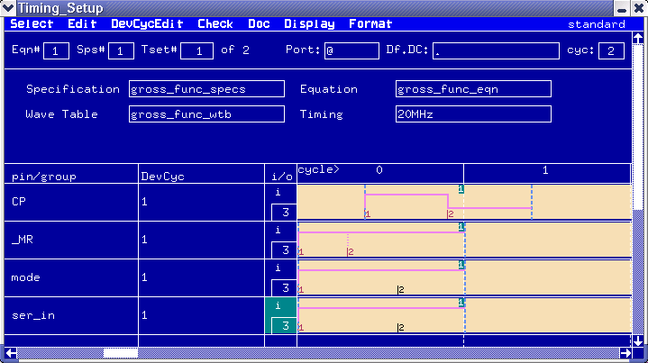

The Timing Setup Window
The following sections give a brief description of the Timing Setup Window, which allows you to set up the "Fixed Timing". You will be introduced to the elements of the window that you are likely to use most often. The descriptions of the tasks that you can perform with the window start with the section Setting the period.
The Timing Setup window is shown in the figure below. It consists of three areas:
- The Global Information area.
- The Timing Entry area.
- The Device Cycle Edit Area.
